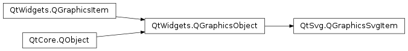

QGraphicsSvgItem¶
Synopsis¶
Functions¶
- def
elementId() - def
isCachingEnabled() - def
maximumCacheSize() - def
renderer() - def
setCachingEnabled(arg__1) - def
setElementId(id) - def
setMaximumCacheSize(size) - def
setSharedRenderer(renderer)
Detailed Description¶
The
PySide2.QtSvg.QGraphicsSvgItemclass is aPySide2.QtWidgets.QGraphicsItemthat can be used to render the contents of SVG files.
PySide2.QtSvg.QGraphicsSvgItemprovides a way of rendering SVG files ontoPySide2.QtWidgets.QGraphicsView.PySide2.QtSvg.QGraphicsSvgItemcan be created by passing the SVG file to be rendered to its constructor or by explicit setting a sharedPySide2.QtSvg.QSvgRendereron it.Note that setting
PySide2.QtSvg.QSvgRendereron aPySide2.QtSvg.QGraphicsSvgItemdoesn’t make the item take ownership of the renderer, therefore if usingPySide2.QtSvg.QGraphicsSvgItem.setSharedRenderer()method one has to make sure that the lifetime of thePySide2.QtSvg.QSvgRendererobject will be at least as long as that of thePySide2.QtSvg.QGraphicsSvgItem.
PySide2.QtSvg.QGraphicsSvgItemprovides a way of rendering only parts of the SVG files via thePySide2.QtSvg.QGraphicsSvgItem.setElementId(). IfPySide2.QtSvg.QGraphicsSvgItem.setElementId()method is called, only the SVG element (and its children) with the passed id will be renderer. This provides a convenient way of selectively rendering large SVG files that contain a number of discrete elements. For example the following code renders only jokers from a SVG file containing a whole card deck:QSvgRenderer *renderer = new QSvgRenderer(QLatin1String("SvgCardDeck.svg")); QGraphicsSvgItem *black = new QGraphicsSvgItem(); QGraphicsSvgItem *red = new QGraphicsSvgItem(); black->setSharedRenderer(renderer); black->setElementId(QLatin1String("black_joker")); red->setSharedRenderer(renderer); red->setElementId(QLatin1String("red_joker"));Size of the item can be set via direct manipulation of the items transformation matrix.
By default the SVG rendering is cached using
QGraphicsItem.DeviceCoordinateCachemode to speedup the display of items. Caching can be disabled by passingQGraphicsItem.NoCacheto theQGraphicsItem.setCacheMode()method.See also
PySide2.QtSvg.QSvgWidgetQt SVG C++ ClassesPySide2.QtWidgets.QGraphicsItemPySide2.QtWidgets.QGraphicsView
-
class
PySide2.QtSvg.QGraphicsSvgItem([parentItem=nullptr])¶ -
class
PySide2.QtSvg.QGraphicsSvgItem(fileName[, parentItem=nullptr]) Parameters: - parentItem –
PySide2.QtWidgets.QGraphicsItem - fileName – unicode
Constructs a new SVG item with the given
parent.Constructs a new item with the given
parentand loads the contents of the SVG file with the specifiedfileName.- parentItem –
-
PySide2.QtSvg.QGraphicsSvgItem.elementId()¶ Return type: unicode Returns the XML ID the element that is currently being rendered. Returns an empty string if the whole file is being rendered.
-
PySide2.QtSvg.QGraphicsSvgItem.isCachingEnabled()¶ Return type: PySide2.QtCore.boolUse
QGraphicsItem.cacheMode()instead.
-
PySide2.QtSvg.QGraphicsSvgItem.maximumCacheSize()¶ Return type: PySide2.QtCore.QSizeReturns the current maximum size of the device coordinate cache for this item. If the item is cached using
QGraphicsItem.DeviceCoordinateCachemode, caching is bypassed if the extension of the item in device coordinates is larger than the maximum size.The default maximum cache size is 1024x768.
QPixmapCache.cacheLimit()gives the cumulative bounds of the whole cache, whereas refers to a maximum cache size for this particular item.See also
PySide2.QtSvg.QGraphicsSvgItem.setMaximumCacheSize()QGraphicsItem.cacheMode()
-
PySide2.QtSvg.QGraphicsSvgItem.renderer()¶ Return type: PySide2.QtSvg.QSvgRendererReturns the currently use
PySide2.QtSvg.QSvgRenderer.
-
PySide2.QtSvg.QGraphicsSvgItem.setCachingEnabled(arg__1)¶ Parameters: arg__1 – PySide2.QtCore.boolUse
QGraphicsItem.setCacheMode()instead. Passing true to this function is equivalent toQGraphicsItem.setCacheMode(QGraphicsItem.DeviceCoordinateCache).
-
PySide2.QtSvg.QGraphicsSvgItem.setElementId(id)¶ Parameters: id – unicode Sets the XML ID of the element to
id.
-
PySide2.QtSvg.QGraphicsSvgItem.setMaximumCacheSize(size)¶ Parameters: size – PySide2.QtCore.QSizeSets the maximum device coordinate cache size of the item to
size. If the item is cached usingQGraphicsItem.DeviceCoordinateCachemode, caching is bypassed if the extension of the item in device coordinates is larger thansize.The cache corresponds to the
PySide2.QtGui.QPixmapwhich is used to cache the results of the rendering. UseQPixmapCache.setCacheLimit()to set limitations on the whole cache and use when setting cache size for individual items.See also
PySide2.QtSvg.QGraphicsSvgItem.maximumCacheSize()QGraphicsItem.cacheMode()
Parameters: renderer – PySide2.QtSvg.QSvgRendererSets
rendererto be a sharedPySide2.QtSvg.QSvgRendereron the item. By using this method one can share the samePySide2.QtSvg.QSvgRendereron a number of items. This means that the SVG file will be parsed only once.PySide2.QtSvg.QSvgRendererpassed to this method has to exist for as long as this item is used.
© 2018 The Qt Company Ltd. Documentation contributions included herein are the copyrights of their respective owners. The documentation provided herein is licensed under the terms of the GNU Free Documentation License version 1.3 as published by the Free Software Foundation. Qt and respective logos are trademarks of The Qt Company Ltd. in Finland and/or other countries worldwide. All other trademarks are property of their respective owners.